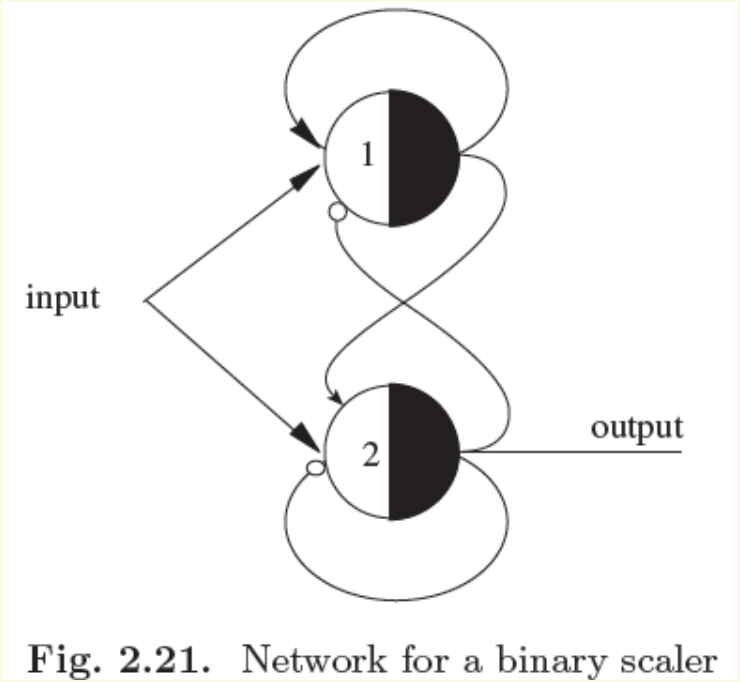
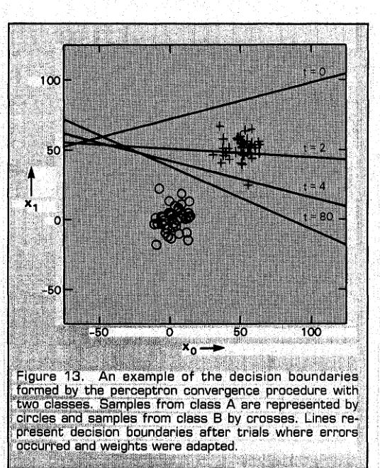

开始之前：这周要学会什么
一个只会输出 0 或 1 的小单元，能实现逻辑门，也能从带答案的样本中学习。但同样的小单元为什么学不会 XOR？本周沿着这条问题线索，先学会计算一个神经元的输出，再学会设计和训练它的参数，最后判断任务是否超出它的表示能力。
学完后，你应能独立完成以下任务：
- 区分 M-P 模型的绝对抑制与一般 TLU 的负权作用，用真值表检查逻辑门。
- 从要求列不等式，设计权重和阈值；解释 decoder 与两层 Boolean 构造为何有效。
- 把加权阈值判断画成直线或超平面，解释 bias 的符号和作用。
- 逐样本执行感知机学习，读懂输入空间中的边界移动与权重空间中的参数移动。
- 用几何和代数证明 XOR 不可分，准确陈述感知机收敛定理的前提。
- 解释 unipolar/bipolar 编码及 Monte Carlo 表格能够、不能支持的结论。
阅读范围：主课件 PDF 实际第 46–82 页，起于 McCulloch-Pitts Neuron，止于 Monte Carlo Tests。所有来源页码均从 PDF 第一页计数。两层逻辑构造只用来理解表示能力；ADALINE、可微多层网络和 BP 不在本周展开。无需前一周教材。
标记约定：“原资料内容”指有相邻来源支持的知识；“前置补充／教学补充”指为补足理解所作的解释、推导或自设例题；“经核实的纠正”会说明核验依据。正文默认展开，仅练习答案可折叠。
重要性依据本周学习依赖与资料中的主题地位：★★★★★ 5/5 核心基础；★★★★☆ 4/5 重要方法；★★★☆☆ 3/5 理解支撑；★★☆☆☆ 2/5 局部拓展；★☆☆☆☆ 1/5 背景补充。评级不表示考试概率。
1. 必要前置：把问题写成可计算的形式
1.1 Input、Weight 与 Supervised learning（输入、权重与监督学习）
假设要根据一封邮件的若干特征判断它是否为垃圾邮件。Input（输入）是描述邮件的数值，例如某词是否出现；Weight（权重）是模型为每个输入配置的数值，决定该输入怎样影响总分；Activation function（激活函数）把总分转换成输出。本周主要使用突然从 0 跳到 1 的阈值函数。
Supervised learning（监督学习）提供成对的“输入与正确答案”。模型先预测，再比较预测与答案，最后按规则修改参数。输入来自样本，权重属于模型；训练时通常保持样本不变而修改权重。能够给出预测是计算规则，能够修改参数是学习规则，这两件事要分开。
| 符号 | 含义、维度与取值 |
|---|---|
| 输入维数、训练样本数，均为正整数。 | |
| 第 p 个输入列向量，属于 ；Boolean 例题中每个分量为 0 或 1。上标括号是样本编号，不是乘方。 | |
| 权重向量属于 ；阈值 θ 和 bias b 是实数标量，本文固定 。 | |
| 加权和 s、加上 bias 的净输入 a；模型输出 y；目标标签 d。默认 。 | |
| t 是逐样本处理的步号，η 是固定正学习率。循环网络部分另用 t 表示离散时刻。 |
前置补充。模型与训练依据：［Lecture_slides_full semester.pdf，PDF实际第61,64页；TLU.pdf，PDF实际第1,13–15页］。主课件的目标标签写作 z，TLU 写作 o，Lippmann 写作 d；本教材统一为 d。
1.2 Truth table 与 Boolean function（真值表与布尔函数）
Boolean variable（布尔变量）只取两个值。本周先规定 1 表示 True（真），0 表示 False（假）。Boolean function（布尔函数）把 n 个这样的输入映射为一个 Boolean 输出。Truth table（真值表）把每个可能输入都列出，因而不是几条举例，而是这个有限函数的完整定义。
两个输入各有两种选择，所以共有 行。本文固定行序为 (0,0)、(0,1)、(1,0)、(1,1)。AND 要求“两个都真”；OR 要求“至少一个真”；NOT 把真假翻转；XOR 要求“两个不同”。OR 包含“两个都真”的情况，XOR 不包含。
| x₁ | x₂ | AND／∧ | OR／∨ | XOR／⊕ | NOT x₁／¬x₁ |
|---|---|---|---|---|---|
| 0 | 0 | 0 | 0 | 0 | 1 |
| 0 | 1 | 0 | 1 | 1 | 1 |
| 1 | 0 | 0 | 1 | 1 | 0 |
| 1 | 1 | 1 | 1 | 0 | 0 |
逻辑符号 ∧、∨ 连接的是真假命题，不等同于普通加法。虽然对于 0/1 输入，AND 的数值恰好等于乘积，但 OR 不能直接写成和：1+1=2，不是合法的 Boolean 输出。阈值函数正好能把这种和重新压回 0/1。
前置补充，真值表对照：［Tutorial 2- M-P neuron.pdf，PDF实际第9–20,26页；Lecture_slides_full semester.pdf，PDF实际第71页］。
1.3 Dot product 与 Hyperplane（向量内积与超平面）
Vector（向量）在这里是一列按固定顺序排列的数。若输入与权重各有 n 个分量，Dot product（内积）就是对应位置先相乘，再把乘积相加：
是权重列向量的转置，维度由 n×1 变为 1×n；乘以 n×1 的输入后得到 1×1 的标量 s。i 是输入位置编号。若 、，则 s=2×1−1×1=1。负权使正输入降低总分，零输入则使对应权重这一次完全不影响总分。
在二维坐标图里，一个输入向量就是一个点。方程 （至少一个权重非零）描述一条直线。满足“大于等于”的点在其中一侧，满足“小于”的点在另一侧。三维时得到平面；n 维时称为 Hyperplane（超平面），其维数是 n−1。我们不必能画出高维图，仍可用同一个不等式计算两侧。
取 。点 (1,0) 的总分为 2，恰在边界；点 (0,1) 的总分为 1，在低于阈值的一侧；点 (1,1) 的总分为 3，在高于阈值的一侧。若用“达到阈值算 1”，这三个点依次输出 1、0、1。等号归哪一类，会改变边界上的预测。
前置补充与几何释义：［TLU.pdf，PDF实际第1,3–5页；Lecture_slides_full semester.pdf，PDF实际第61,72–75页］。
1.4 Inequality 与 Proof by contradiction（不等式与反证法）
对不等式两边加同一个数不改变方向；两边乘正数不改变方向；乘负数必须反向。例如 等价于 。若 且 ，相加得到 。严格的“小于”不能无故改成“小于等于”。
Proof by contradiction（反证法）用于证明“根本不存在”。先暂时假设所求参数存在，把每个输入的要求写成必要条件；如果这些条件推出相互矛盾的结果，就说明假设不成立。找了十组失败的权重只说明十次尝试失败；从任意权重推出矛盾，才能证明所有权重都不行。
查看讲解答案
前两式相加得到 u+v≥6，而最后一式要求 u+v<5，两者不能同时成立。这个判断没有枚举 u、v，是直接证明约束无解。
前置补充；反证法在原资料中的应用：［Tutorial 2- M-P neuron.pdf，PDF实际第28页；TLU.pdf，PDF实际第6页］。
现在已有表示输入、计算总分和检查条件的工具。接下来先把这些工具放进一个参数由人设计的神经元。
2. M-P Neuron 与 Threshold logic（M-P 神经元与阈值逻辑）
2.1 Biological neuron（生物神经元）：模型借用了什么
辅助课件把过程分为四步：Dendrites（树突）接收来自其他神经元的信号；Soma（细胞体）参与整合；触发的信号沿 Axon（轴突）传播；在 Synapse（突触）处影响下一个神经元。这里采用的是帮助入门的示意：输入会汇聚，影响有强弱，达到某种条件才产生输出。
McCulloch-Pitts neuron（麦卡洛克–皮茨神经元，M-P neuron）把这一直觉变成 0/1 逻辑计算。真实神经元的时间变化、化学过程和触发机制远比一个加法器加开关复杂；不能把抽象模型中的“1”“阈值”当作完整生理机制。M-P 模型在本周的价值是提供一个可严格分析的计算元件。
原资料内容与类比边界说明：［Tutorial 2- M-P neuron.pdf，PDF实际第2–8页；Lecture_slides_full semester.pdf，PDF实际第46–47页；Tutorial 1.pdf，PDF实际第6–7页］。
2.2 Excitation、Inhibition 与 Veto（兴奋、抑制与一票否决）
主课件第47页的 M-P 规则有明确的优先级。Excitatory input（兴奋输入）为 1 时贡献一个单位；Inhibitory input（抑制输入）只要有一个为 1，就强制输出为 0，称为 Veto（否决）或 Absolute inhibition（绝对抑制）。只有没有抑制输入激活时，才比较兴奋输入的和与阈值。
E、I 分别是兴奋与抑制输入的索引集合；所有 x 都为 0/1；θ 是标量阈值；y 为 0/1。“∃”表示至少存在一个，“∀”表示全部，“∧”表示并且。若 I 为空，就没有 veto 检查。课件把两类连接记为 +1、−1，但这里的 −1 同时带有“先否决”的语义，不只是让总和减去 1。原图用连接末端的小空圆表示抑制。
三个输入都是 1，前两个兴奋、第三个抑制，θ=1。按第47页的 veto 模型，第三个输入已经触发否决，故 y=0。若改用普通加权模型，权重为 (1,1,−1)，则总分为 1+1−1=1≥1，输出反而为 1。差异来自模型定义，不是算术错误。
一般 Threshold logic unit（阈值逻辑单元，TLU）的负权只降低总分，足够大的正贡献可以抵消它。Tutorial 和 TLU.pdf 中有些被称作“M-P”的例子实际采用这种加权定义。本文从一般带权连接开始使用“加权 TLU”，保留第47页 M-P 的独立 veto 规则。
原资料对照：［Lecture_slides_full semester.pdf，PDF实际第47页；Tutorial 2- M-P neuron.pdf，PDF实际第7–8,19页；TLU.pdf，PDF实际第1–2页］。定义不同的澄清，不把它们合并为同一个算法。
2.3 Step function 与 Threshold design（阶跃函数与阈值设计）
不含 veto 的加权 TLU 先计算总分 s，再使用 Step function（阶跃函数）：
H 接受一个实数标量并输出 0/1，a=s−θ 为距离阈值的带符号总分差，不是一般意义的几何距离。本文固定 H(0)=1。正负输入、权重都允许出现在一般 TLU 中；逻辑门示例的输入则仍为 0/1。
读图时先看横轴 a，再看纵轴 H(a)。负半轴输出 0，非负半轴输出 1；在 a=0 处，上方实心点属于输出，下方空心点不属于。H 不是概率：输出 1 只表示通过这次判断，不表示“百分之百确信”。
设计阈值可以先固定方便的权重，把应输出 0 的总分和应输出 1 的总分分别算出。若两类都非空，合法阈值应满足：
max 是所有负类样本总分中的最大值，min 是所有正类样本总分中的最小值。左边严格是因为负类不能碰到阈值；右边允许相等是因为正类可以在边界上。找不到这样的间隙，说明当前权重不合适，尚不能直接断言所有权重都不行。
原资料公式：［Lecture_slides_full semester.pdf，PDF实际第48,61页；TLU.pdf，PDF实际第1页］；阈值区间与图为教学补充。
2.4 Logic gates（逻辑门）：从要求设计权重
已知 x₁、x₂∈{0,1}，先选 w₁=w₂=1。因此 s=x₁+x₂ 表示“有几个输入为 1”。按四行输入，总分依次为 0、1、1、2。
对 AND，前三行目标是 0，最后一行目标是 1，因此要求 1<θ≤2。选 θ=2，(1,1) 恰好达到阈值，其余都达不到。对 OR，只有第一行目标是 0，其余目标是 1，故 0<θ≤1，选 θ=1。这说明同一组权重只改变阈值，就能改变逻辑功能。
| 输入 | s | AND：s≥2？ | OR：s≥1？ |
|---|---|---|---|
| (0,0) | 0 | 否 → 0 | 否 → 0 |
| (0,1) | 1 | 否 → 0 | 是 → 1 |
| (1,0) | 1 | 否 → 0 | 是 → 1 |
| (1,1) | 2 | 是 → 1 | 是 → 1 |
推广到 n 个输入时，所有权重仍取 1。AND 只有总分达到 n 才触发，故 θ=n；OR 有任何一个 1 就应触发，故 θ=1。三个输入的 Majority function（多数函数）要求至少两个为 1，故 θ=2。例如 (1,0,1) 总分为 2，应输出 1。
带否定的门需要谨慎选择模型。下表的权重都按一般加权 TLU解释，不能自动替换成 veto：
| 功能 | 权重 w | θ | 总分与判断理由 |
|---|---|---|---|
| NOT x | (−1) | 0 | x=0 时 s=0≥0；x=1 时 s=−1<0。 |
| NOR：¬(x₁∨x₂) | (−1,−1) | 0 | 只有 (0,0) 总分为 0；其余为 −1 或 −2。 |
| NAND：¬(x₁∧x₂) | (−1,−1) | −1 | 总分为 0、−1、−1、−2，只有最后一行低于 −1。 |
| x₁∧¬x₂ | (1,−1) | 1 | 四行总分为 0、−1、1、0，仅 (1,0) 通过。 |
在 veto 模型中，NOT 可用一个抑制输入、θ=0；NOR 可用两个抑制输入、θ=0；x₁∧¬x₂ 可用 x₁ 兴奋、x₂ 抑制、θ=1。但是表中的 NAND 如果把两个 −1 当成 veto，就会让 (1,0) 和 (0,1) 都错误输出 0。因此同一幅“负权”图必须先确认定义。
TLU.pdf 给出 w=(2,−2)、θ=−1。四行输入的总分是 0、−2、2、0，输出为 1、0、1、1。这是 Implication（蕴含） x₂→x₁：仅“前提 x₂ 为真、结论 x₁ 为假”时为假。(1,1) 虽有负权输入，正贡献仍把总分拉回 0，故能够触发。
同一 AND 也不只有单位权重解。TLU 的 w=(3,2)、θ=4 给出总分 0、2、3、5，仍然只有 (1,1) 输出 1。设计的是一组满足约束的参数，不是寻找唯一标准数值。
提示与完整答案
第一问取 w=(1,1,1)、θ=2。按 1 的个数 k=0、1、2、3，总分 k，输出 0、0、1、1。第二问取 w=(−1,−1,−1)、θ=−1，总分 −k，输出 1、1、0、0。尤其 k=1 时 −1≥−1，所以等号必须归入输出 1。
原资料与例题：［Lecture_slides_full semester.pdf，PDF实际第49–50,75页；Tutorial 2- M-P neuron.pdf，PDF实际第9–20页；TLU.pdf，PDF实际第2–3页］。阈值区间与练习为教学补充。
一个门只能执行一个阈值判断。接下来把它用作“识别某一行输入”的小部件，看看组合能增加多少能力。
3. Decoder、两层构造与单调性
3.1 Decoder（解码器）：只认出一个输入模式
Decoder（解码器）接收一个 Boolean 向量，只在它与指定模式完全相同时输出 1。主课件的 (1,0,1) decoder 要求 x₁=1、x₂=0、x₃=1。按 veto 模型，把 x₁、x₃ 接为兴奋输入，把 x₂ 接为抑制输入，θ=2。
验证分两步：如果 x₂=1，立即否决，排除全部第二位错误的输入；如果 x₂=0，则必须 x₁+x₃≥2，而两者至多各为 1，所以必须都为 1。两步合起来，恰好只留下 (1,0,1)。主课件第51页另一幅图先对 x₁、x₂ 做 NOT，再与 x₃ 做三输入 AND，因此认出的是(0,0,1)，不要把同页两幅图当成同一个目标模式。
目标模式为 。令 k 为其中 1 的个数：目标位为 1 的权重取 +1，目标位为 0 的权重取 −1，并令 θ=k。
r、x、w 均为 n 维向量，r 是固定目标，x 是待识别输入。完全匹配时，每个目标 1 贡献 1，每个目标 0 贡献 0，总分为 k。任何一位不匹配都会使总分减少 1，因此只要有错位就低于阈值。对 (1,0,1)，得到 w=(1,−1,1)、θ=2；对 (1,1,1)，总分变为 1，不通过。这个 decoder 里 −1 足够实现目标，并不意味着所有 −1 都具有 veto 效果。
原资料：［Lecture_slides_full semester.pdf，PDF实际第51页；TLU.pdf，PDF实际第8–9页］；±1 的统一构造为教学推导，TLU 原文采用等效的 ±2 构造。
3.2 Two-layer Boolean construction（两层布尔函数构造）
真值表里一个函数可能在多行输出 1。既然一个 decoder 可以认出一行，就为每个正行各造一个 decoder，然后用 OR 汇总：只要任意一个 decoder 认出输入，整体就应输出 1。
主课件第52页指定 F 只在 (0,0,1) 与 (0,1,0) 输出 1。第一层的两个 detector 分别计算 和 ；第二层计算 。h₁、h₂ 都是中间的 Boolean 输出。
沿图先看第一层：每个框认出一个完整模式；再看第二层，它只接收两个识别结果。输入 (0,0,1) 时得到 (h₁,h₂)=(1,0)，OR 输出 1；输入 (0,1,1) 时两个完整模式都不匹配，得到 (0,0)，所以输出 0。OR 汇总不是“只看原输入中有没有 1”。
对 n 个 Boolean 输入，最多有 2ⁿ 行。每个正行配一个 decoder，最后一个 OR，就构成任意函数。若没有正行，直接使用恒 0 单元即可。这里“两层”指两层计算单元，不把只传递数值的输入位置计为计算层。
把每个正行写成一项 AND，再把各项用 OR 连接，就是 Disjunctive normal form（析取范式，DNF）的直观含义。此处证明的是存在一个可实现函数的网络，并未保证单元数少，更没有给出自动训练所有层的算法。最直接构造可能需要大量 decoder。本周在这里止步，不展开多层 XOR、parity 或 XNOR 的参数设计。
原资料内容：［Lecture_slides_full semester.pdf，PDF实际第52–53页；TLU.pdf，PDF实际第6–9页］。图为依据第52页结构重绘的教学示意图。
3.3 Monotonicity（单调性）：没有抑制会失去什么
Monotone Boolean function（单调布尔函数）指只把某些输入从 0 改为 1、其他输入保持不变时，输出不能从 1 降为 0。用逐分量关系表示：
两个向量都属于 {0,1}ⁿ；左侧“≤”表示每一位分别满足 xᵢ≤x′ᵢ，而不是只比较 1 的总数。若所有连接都是非负兴奋权重，增加输入不会降低加权和，原本已达到阈值就仍达到。因此无抑制 M-P 单元只能实现单调函数；把这种单元前馈组合，逐层也保留单调性。
AND、OR、三输入 Majority 都单调。NOT 则把 x=0 时的输出 1 变成 x=1 时的输出 0，所以不单调。这说明需要否定或抑制来构成任意逻辑。课件说的是“只能实现单调函数”，不是“单个无抑制单元能实现所有单调函数”。允许负权的一般 TLU 不受这个单调限制，但仍受线性可分限制。
查看讲解答案
不能。两点没有逐分量的大小关系：一个第一位大，另一个第二位大。函数 F=x₁ 是单调函数，却分别输出 1 和 0。单调性讨论的是在原有 1 不减少的前提下增加 1。
原资料命题：［Lecture_slides_full semester.pdf，PDF实际第53页］；逐分量证明与辨析为教学补充。
3.4 Weighted connections（带权连接）：把重复连线压成一个数
主课件第54页比较两种表示。左图的触发条件是：
全部乘以正数 10 不改变不等号方向，也不改变任何输入的输出。右图可以把 x₁、x₂、x₃ 分别复制为 2、4、3 条单位兴奋连线，阈值设为 7。这不是增加了新特征，只是把同一个输入重复相加。
例如 (0,1,1) 的左侧总分为 0.7，右侧为 7，两种表示都恰好触发；(1,1,0) 分别为 0.6 和 6，都不触发。正有理权重可以通过同乘分母再复制连线实现；这幅图不等于宣称任意实数都能用有限条连线精确表示。使用数值权重的实际便利是：改变影响强度时只改参数，不必重接许多线路。
原资料图与算式：［Lecture_slides_full semester.pdf，PDF实际第54页］；边界说明与代入验证为教学补充。
4. Recurrent network 与 Finite automaton（循环网络与有限状态自动机）
4.1 Stored state 与 Binary scaler（存储状态与二进制计数示例）
前馈逻辑只看当前输入。若要在第二个脉冲到来时才输出一个脉冲，必须记得是否已经收到第一个。Recurrent network（循环网络）把单元输出接回输入，使上一步的结果能影响下一步。环路不能理解成“同一时刻不断把结果立即塞回去”；需要规定更新时序。

先看上方单元 A：阈值 1，自身输出经兴奋连接反馈；再看下方单元 B：阈值 2，接收外部输入 u 和 A 的兴奋信号。B 同时通过两个带空圆的连接否决 A 与 B 自身。下方 B 的输出是图中的 output。
教学推演约定：采用同步离散更新，每个单元延迟一个时间步；Aₜ、Bₜ∈{0,1} 是时刻 t 的状态，uₜ 是该时刻输入。右侧只使用旧状态，两单元一起产生下一步状态：
第一个式子源于 A 的阈值 1：u 或 A 有一个为 1 就足够，但 B=1 时 veto 优先。第二个式子源于 B 的阈值 2：必须 u=A=1，且旧 B=0。它们是从第55页连线读出的状态方程，不能把新 Aₜ₊₁提前用于计算 Bₜ₊₁。
初态 (A₀,B₀)=(0,0)。逐次输入 1、0、1、0，输出按“本次更新完成后的 B”读取：
| t | uₜ | 旧状态 (Aₜ,Bₜ) | 新状态 | Bₜ₊₁ | 为什么 |
|---|---|---|---|---|---|
| 0 | 1 | (0,0) | (1,0) | 0 | A 记住第一个脉冲；B 只得一份兴奋。 |
| 1 | 0 | (1,0) | (1,0) | 0 | A 自反馈保存状态，B 未达阈值。 |
| 2 | 1 | (1,0) | (1,1) | 1 | 第二个脉冲与 A 的记忆同时到达 B。 |
| 3 | 0 | (1,1) | (0,0) | 0 | 旧 B=1 否决两个单元，完成清零。 |
因此这个条件下两个脉冲得到一个输出脉冲。但清零步会忽略输入；若无限连续输入 1，状态按 00→10→11→00 循环，不能未经说明称为对任意输入流都精确“除以二”。时刻对齐、初态与脉冲间隔都是计算的一部分。
原图：［Lecture_slides_full semester.pdf，PDF实际第55页］。同步单位延迟可追溯至 Rojas《Neural Networks》Ch.2 PDF 实际第14页，Fig.2.21（外部核验）。本表与状态方程为按明确时序独立复算的教学推演；不照抄原书未交代对齐方式的串行输出示例。
4.2 Finite automaton（有限状态自动机）
Finite automaton（有限状态自动机）由有限个状态、有限种输入以及状态转移规则构成。它的下一状态由“当前状态＋新输入”决定；输出也由规定的状态／输入规则给出。前例的状态不是 u，而是神经元内部保存的 (A,B)。从 00 出发，只会到达 00、10、11 三种状态。
| 当前状态 | 输入 0：下一状态／输出 | 输入 1：下一状态／输出 |
|---|---|---|
| 00：尚未记住脉冲 | 00／0 | 10／0 |
| 10：已记住一个脉冲 | 10／0 | 11／1 |
| 11：刚触发输出 | 00／0 | 00／0 |
主课件提出：任何有限自动机都可以由循环 M-P 网络模拟。理解其理由不必现在设计复杂电路：先用有限个 Boolean 位编码状态；把“状态位与输入位→下一状态位”写成有限真值表；前一章已说明 Boolean 函数能够由 M-P 网络计算；再用反馈保存下一状态。还需安排传播延迟，使同一轮计算使用同一份旧状态。这个命题是关于表示与模拟，不是声称这些连接会自动学出来，也不是说有限个状态就有无限记忆。
原资料定义和命题：［Lecture_slides_full semester.pdf，PDF实际第56–57页］；状态编码解释与转移表为教学补充。
至此我们主要在设计电路。感知机的下一步，是让带权单元从样本中调整参数，而不是由人逐门指定。
5. Perceptron 与 Bias（感知机与偏置）
5.1 Classical perceptron 与 Simple perceptron（经典与简化感知机）
Rosenblatt在1958年提出感知机。主课件第59页的 Classical perceptron（经典感知机）不是只有一个圆：Retina（视网膜式输入面）经 Projection area（投射区）、Association area（联想区）到 Responses（响应）。第60页把输入处理结果记为 p₁、p₂ 等，它们可理解为对原输入进行的固定特征检测或谓词判断，再加权汇总。
本周分析的 Simple perceptron（简化感知机）把这些输入特征视为已经给定，只保留一个可训练的加权 TLU。它接受 n 个实数输入，通过 n 个实数权重和一个阈值输出二分类结果。历史模型的固定输入处理不等于本周已学习“自动训练多层特征”。所谓线性边界，是相对于送进这个 TLU 的特征坐标而言。
例如一幅图片可以先变成“左边有没有竖线”“上方有没有横线”等 Boolean 特征。TLU 对这些特征做线性判断；这不意味着它直接在每个原始像素上使用同一条简单直线。为了避免把特征设计与单元学习混在一起，本周例题直接使用给定 x。
原资料结构与定义：［Lecture_slides_full semester.pdf，PDF实际第58–61页；Perceptron_Adaline.pdf，PDF实际第2–4页；TLU.pdf，PDF实际第1页］。图片特征例子为教学补充。
5.2 Bias 与 Augmented vector（偏置与增广向量）
总分 s≥θ 与 s−θ≥0 完全等价。定义 Bias（偏置） ，就可以把模型写为：
w、x 为 n 维列向量，b、a 为标量。b 越大，同一输入越容易达到 a≥0；θ 越大，同一输入越不容易触发。因此 b 与 θ 的变化方向相反。几何上固定 w、改变 b 会平移边界；如果没有 bias 且阈值固定为 0，边界必须经过原点，模型选择受到额外限制。
可以再增加一个固定值为 1的虚拟输入 x₀，将其权重设为 b，得到 Augmented vector（增广向量）：
这两个增广向量均为 n+1 维。x₀ 不是训练样本中新测出的特征，它永远为 1；b 是需要调整的参数。另一种资料约定用 x₀=−1、w₀=θ，也能得到相同的 −θ 项。两种写法都正确，但不能把 x₀=1 与 w₀=+θ 错配。
Perceptron_Adaline.pdf 第10页给出 w₁=w₂=1.1、b=−1，即 θ=1。四行净输入依次为 −1、0.1、0.1、1.2，阈值输出依次为 0、1、1、1，确实为 OR。若误把 b 写成 +1，则 (0,0) 也会输出 1，第一行立即暴露符号错误。
若重新从真值表求条件，必须写 b<0、w₂+b≥0、w₁+b≥0、w₁+w₂+b≥0。第10页若干推导把“≥”写成“>”；严格分离的例子仍有效，但一般必要条件应保留“≥”。
Perceptron_Adaline.pdf 第9页的无抑制 M-P 对照式省略了明确的阈值／bias 项。若真的把非负 Boolean 输入直接相加后与 0 比较，就会恒输出 1。应使用 ∑xᵢ≥θ，或先明确定义增广常量项再与 0 比较。本文采用完整公式。
原资料：［Lecture_slides_full semester.pdf，PDF实际第69页；Perceptron_Adaline.pdf，PDF实际第5–10页；TLU.pdf，PDF实际第13–14页］。纠正依据为代数等价与四行真值表核对。
查看讲解答案
b=−θ=1，增广权重按本文顺序为 (1,2,−3)，增广输入为 (1,1,1)。a=1+2−3=0，所以 y=1。原形式总分 −1≥θ=−1，得到同一结果。负阈值对应正 bias。
6. Input space 与 Linear separability（输入空间与线性可分）
6.1 Decision boundary（决策边界）：固定参数，观察输入
Input space（输入空间）的坐标轴是 x₁、x₂ 等输入特征。固定一组参数，每个样本成为一个点，模型把空间分成两个 Half-spaces（半空间）。在二维中是两个半平面，它们之间的 Decision boundary（决策边界）满足：
参数固定，x 在变化；边界上的所有点均满足同一个等式。本教材的正侧包含边界（a≥0），负侧不含边界（a<0）。若 w=0，则输出由 b 单独决定，是常值分类器，不能把 0+b=0 都当作普通超平面。
图中的圆点表示输入，实心为目标 1、空心为目标 0；青绿色直线才是模型边界。左图 OR 采用 x₁+x₂=0.5，把 (0,0) 单独留在负侧；右图 AND 采用 x₁+x₂=1.5，把 (1,1) 单独留在正侧。这里用半整数阈值，使四个 Boolean 点都不落在线上；它们在 Boolean 输入上分别等效于前面 θ=1 的 OR 与 θ=2 的 AND，但对其他实数输入可能有不同输出。
若 w₂≠0，可解成 。斜率为 −w₁/w₂，纵截距为 −b/w₂。若 w₂=0 而 w₁≠0，则是竖线 x₁=−b/w₁，不能除以零。Normal vector（法向量）w 垂直于边界，并指向总分增加的一侧：沿 w 移动 λ>0 后，净输入增加 ，其中 。
原资料几何：［Lecture_slides_full semester.pdf，PDF实际第72,76页；Tutorial 2- M-P neuron.pdf，PDF实际第21–22页；TLU.pdf，PDF实际第3–4页］；图与半整数阈值比较为教学补充。
6.2 Boolean cube 与三维平面（布尔立方体）
三个 Boolean 输入共有 2³=8 种组合，可放在单位立方体的八个顶点。主课件第73页在顶点旁标出的 0/1 是函数输出，并不是每个顶点的完整坐标；第74–75页则加入了具体阈值平面。
OR 使用 w=(1,1,1)、θ=1，平面 x₁+x₂+x₃=1 经过 (1,0,0)、(0,1,0)、(0,0,1)。这些点都属于输出 1 的一侧，只有原点输出 0。Majority 把阈值提高为 2，平面经过三个“恰有两个 1”的顶点；它们仍应输出 1，三个“恰有一个 1”的顶点则改为 0。两平面平行，因为法向量相同，改变的是阈值。
TLU.pdf 还给出含负权的三输入例子 w=(2,−2,2)、θ=1，表示 。为什么？若 x₂=0，只要 x₁或x₃为1，总分至少2；若 x₂=1，需要 x₁=x₃=1，才能把 −2 抵消并达到阈值。其边界 2x₁−2x₂+2x₃=1 不再与前两平面平行。原 PDF 的否定横线在文本提取中会丢失，这里已按原图与真值表恢复。
原资料与公式核对：［Lecture_slides_full semester.pdf，PDF实际第73–75页；Tutorial 2- M-P neuron.pdf，PDF实际第23–24页；TLU.pdf，PDF实际第2–5页］。
6.3 Linear 与 Absolute linear separability（线性可分与绝对线性可分）
一组带标签的数据若存在某组 w、θ，使所有 d=1 的样本达到阈值、所有 d=0 的样本低于阈值，就称为 Linearly separable（线性可分）。这是关于存在一组共同参数的陈述，不是允许每个点单独选一组参数。
这里 p=1,…,P，w∈ℝⁿ，θ∈ℝ。按主课件第62页用语，Absolute linear separability（绝对线性可分）进一步要求正类严格大于阈值，即两类都不在分界面上。其他教材常直接把这种严格情形称为线性可分，比较资料时应先看定义。
假设两类都非空，而且已有一组可分参数。令 m₋ 为负类最大总分，m₊ 为正类最小总分。由于样本有限，这两个极值确实能取到，且 m₋<θ≤m₊，所以 m₋<m₊。把阈值移到它们中间：
每个负类总分都≤m₋<θ′，每个正类总分都≥m₊>θ′，从而严格分开。比如 AND 的 w=(1,1)、θ=2 把正点放在边界；负类最大总分为1，正类最小总分为2，改成 θ′=1.5 就留下正间隔。只有一类时可直接选常值输出，无须使用这个两类极值论证。
“有限”不是多余条件。教学反例：一维正类只有 x=0，负类是 −1、−1/2、−1/3、……；以 w=1、θ=0 可正确分类，却不存在能够夹在全部负点与0之间的严格阈值。负类可以无限靠近0，缺少可用的正间隙。
原资料定义与命题：［Lecture_slides_full semester.pdf，PDF实际第62–63页；TLU.pdf，PDF实际第18–19开头页］；极值证明与无限集反例为教学补充。
查看讲解答案
四个总分依次为0、1、2、3；负类最大为2，正类最小为3，所以 2<θ≤3。选 θ=2.5 时，所有样本都离开边界。θ=2 不行，因为 (1,0) 总分为2，会被错误归为1。
7. Perceptron learning rule（感知机学习规则）：一步一步把错分修正
7.1 Error correction（误差纠正）：为什么这样更新
人工画线在二维很方便，高维却难以依靠目测。Perceptron learning rule（感知机学习规则）从一组初始参数开始，每次呈现一个有答案的样本。它只根据当前预测是否错误来调整参数。参数可以随机初始化，也可以像本周示范一样从0开始；单个感知机不需要靠随机化打破多层网络的对称性。
x∈ℝⁿ是本次样本；d、y∈{0,1}，因此 e∈{−1,0,1}；η>0 是固定学习率；w 的更新也是 n 维向量，b 和 θ 的更新是标量。b 与 θ 是同一个自由参数的两种表示，实际计算只需保存其中一个，不能把它们当作互不相关的参数分别学习。
| 情况 | e | 更新 | 作用 |
|---|---|---|---|
| 预测正确 | 0 | 全部不变 | 当前样本无需纠正。 |
| 应为1，却预测0 | +1 | w 加 ηx，b 加 η | 提高当前样本净输入。 |
| 应为0，却预测1 | −1 | w 减 ηx，b 减 η | 降低当前样本净输入。 |
为什么乘 x，而不是把所有权重一律加1？因为每个权重对这次净输入的影响由对应输入决定。将同一个样本重新代入，净输入变化恰好为：
这里 ，额外的1来自 bias 的固定输入。括号总为正，因此 e=+1 一定使 a 增大，e=−1 一定使 a 减小，即使 x 有负分量也成立。方向一定对当前样本有帮助，但一步未必足以跨过边界，也可能使其他样本变错。算法不是保证每次更新都使全训练集错误数减少。
当某个 xᵢ=0，Δwᵢ=0；这不表示该样本没有用，因为 bias 仍会更新。尤其全零输入的分类只能通过 b（或 θ）改变。若遗漏 bias 更新，一些本来可分的任务也会被错误地训练成“找不到解”。
原资料规则：［Lecture_slides_full semester.pdf，PDF实际第64,69页；TLU.pdf，PDF实际第13–15页；ASSPM-Lippmann1987.pdf，PDF实际第10页］；净输入变化式为教学推导，补齐主课件未单列的阈值更新。
7.2 Online learning、Batch learning 与 Epoch（在线学习、批学习与轮次）
Epoch（轮次）是把全部 P 个训练样本处理一遍。Online learning（在线学习）每遇到一个样本便预测并立即更新，下一行使用更新后的参数；这里“在线”不表示联网。Batch learning（批学习）则在一轮开始时固定参数，用它们计算这一轮所有预测，把更新量累加后统一应用。
这是 batch 的一轮更新；所有 y⁽ᵖ⁾都由同一组旧参数计算。P 是样本数，结果 Δw∈ℝⁿ、Δb∈ℝ。它与把 online 一轮结束后的数值抄来相加不同，因为 online 中预测用的参数已经逐行改变。
输入顺序为 (x=0,d=1)、(x=1,d=0)，初始 w=2、θ=1.5，η=1。Online 先遇到 x=0：0<1.5，误判0，故 θ降到0.5，w仍为2。第二行用新θ=0.5：2≥0.5，误判1，故 θ升回1.5，w降到1。第一轮结束为 (w,θ)=(1,1.5)。
Batch 第一轮两行都用 (2,1.5)，恰巧得到相同总更新。但第二轮不同：online 第一行先使 θ从1.5降至0.5，第二行随后误判而把w降到0、θ升回1.5；batch第二行仍用θ=1.5，1<1.5，预测0正确，只累加第一行的阈值更新，所以结束为(w,θ)=(1,0.5)。这种差别来自“什么时候更新”，不是规则符号不同。TLU 的完整轨迹最后都得到 w=−1、θ=−0.5。
Online 的可靠停止检查是：完整一轮没有任何误分类、没有任何更新。不能因某一行正确、某一权重没有变化或浮点变化很小就宣称全体正确。实践中还可设最大轮数作为运行限制，但达到轮数上限表示“停止尝试”，不是数学意义的收敛。
原资料方法与 NOT 轨迹：［TLU.pdf，PDF实际第12,14–16页］。这里按公式复算并将总分与净输入分开称呼。
7.3 Worked training example（完整训练示范）：从零学会 AND
采用 TLU.pdf 第17页的设定并独立复算：样本固定按 (0,0)、(0,1)、(1,0)、(1,1) 排序，目标为0、0、0、1；初始 (w₁,w₂,b)=(0,0,0)，η=1；采用 online 更新和 H(0)=1。表内 a、y、e 全部用更新前参数计算，“更新后参数”供下一行使用。θ始终等于−b。
第1轮第1行：x=(0,0)，a=0，故 y=1；目标d=0，e=−1。Δw=e·x=(0,0)，Δb=−1，所以新参数(0,0,−1)。这是全零输入也能推动学习的例子。
第1轮第4行：前两条非零负例均正确，参数仍(0,0,−1)。对x=(1,1)，a=−1，y=0，但d=1，所以e=1；两个权重各加1，bias加1，得到(1,1,0)。它修好了这一点，却又使(0,0)的净输入为0，因此下一轮还会出错。
第2轮第2行：此时参数为(1,1,−1)，x=(0,1)使a=0、y=1、e=−1；只有w₂减1，b减1，得到(1,0,−2)。w₁不动，因为该行x₁=0。
| 轮次 | x | d | 旧 (w₁,w₂,b) | a | y | e | 更新后 (w₁,w₂,b) |
|---|---|---|---|---|---|---|---|
| 1 | (0,0) | 0 | (0,0,0) | 0 | 1 | -1 | (0,0,-1) |
| 1 | (0,1) | 0 | (0,0,-1) | -1 | 0 | 0 | (0,0,-1) |
| 1 | (1,0) | 0 | (0,0,-1) | -1 | 0 | 0 | (0,0,-1) |
| 1 | (1,1) | 1 | (0,0,-1) | -1 | 0 | 1 | (1,1,0) |
| 2 | (0,0) | 0 | (1,1,0) | 0 | 1 | -1 | (1,1,-1) |
| 2 | (0,1) | 0 | (1,1,-1) | 0 | 1 | -1 | (1,0,-2) |
| 2 | (1,0) | 0 | (1,0,-2) | -1 | 0 | 0 | (1,0,-2) |
| 2 | (1,1) | 1 | (1,0,-2) | -1 | 0 | 1 | (2,1,-1) |
| 3 | (0,0) | 0 | (2,1,-1) | -1 | 0 | 0 | (2,1,-1) |
| 3 | (0,1) | 0 | (2,1,-1) | 0 | 1 | -1 | (2,0,-2) |
| 3 | (1,0) | 0 | (2,0,-2) | 0 | 1 | -1 | (1,0,-3) |
| 3 | (1,1) | 1 | (1,0,-3) | -2 | 0 | 1 | (2,1,-2) |
| 4 | (0,0) | 0 | (2,1,-2) | -2 | 0 | 0 | (2,1,-2) |
| 4 | (0,1) | 0 | (2,1,-2) | -1 | 0 | 0 | (2,1,-2) |
| 4 | (1,0) | 0 | (2,1,-2) | 0 | 1 | -1 | (1,1,-3) |
| 4 | (1,1) | 1 | (1,1,-3) | -1 | 0 | 1 | (2,2,-2) |
| 5 | (0,0) | 0 | (2,2,-2) | -2 | 0 | 0 | (2,2,-2) |
| 5 | (0,1) | 0 | (2,2,-2) | 0 | 1 | -1 | (2,1,-3) |
| 5 | (1,0) | 0 | (2,1,-3) | -1 | 0 | 0 | (2,1,-3) |
| 5 | (1,1) | 1 | (2,1,-3) | 0 | 1 | 0 | (2,1,-3) |
| 6 | (0,0) | 0 | (2,1,-3) | -3 | 0 | 0 | (2,1,-3) |
| 6 | (0,1) | 0 | (2,1,-3) | -2 | 0 | 0 | (2,1,-3) |
| 6 | (1,0) | 0 | (2,1,-3) | -1 | 0 | 0 | (2,1,-3) |
| 6 | (1,1) | 1 | (2,1,-3) | 0 | 1 | 0 | (2,1,-3) |

原图用圆圈和叉号区分两个样本类，横轴x₀、纵轴x₁都是输入特征（这里的x₀不是本文的固定bias输入）。四条直线标记不同试次t=0、2、4、80的边界；样本位置未动，移动的是模型边界。Lippmann原文说明该例在第4次试次后已经分开两类，但这幅个例图不能证明所有数据四步收敛。
原资料图与说明：［Lecture_slides_full semester.pdf，PDF实际第65页；ASSPM-Lippmann1987.pdf，PDF实际第11页］。
第5轮结束得到 w=(2,1)、b=−3，即 θ=3；第6轮四行均无更新，才完成停止检查。最终四个净输入依次为 −3、−2、−1、0，输出为0、0、0、1。正例在边界上仍然正确，正是 H(0)=1 的结果。若需要严格分离，保持权重并把θ改为2.5即可，但那是另外选取一个等效解，不是训练表中实际发生的更新。
TLU.pdf 第17页 Table 3.4 和第18页正文给出的结果为 w=(2,1)、θ=3，第17页图3.21的圆内却印作2；将θ=2代入会使(1,0)错误输出1，因此图内应为3。训练表中标作 xw 的列实际列的是净输入 wᵀx−θ，本文改为 a。这里采用复算一致的表和边界方程。
查看讲解答案
a=1×0+2×1−2=0，y=1，e=−1。Δw=(0,−0.5)，Δb=−0.5，故新参数(1,1.5,−2.5)。旧θ=2，新θ=2−0.5×(−1)=2.5，与新b=−2.5一致。重新评估当前点，a=1.5−2.5=−1，预测0正确。
据原资料独立复算：［TLU.pdf，PDF实际第17–18页；Lecture_slides_full semester.pdf，PDF实际第64页］。练习为教学补充。
7.4 Error landscape（误差景观）：阶梯、斜坡与纠错方向
Error landscape（误差景观）把参数当作横坐标、错误量当作高度。给定固定训练集，最直观的错误数为：
E_count是0至P的整数，因为默认标签为0/1。只要微调参数尚未使任何样本越过边界，所有预测都不变，所以错误数也不变；跨过某个样本的临界面时才跳变。它由平坦区域组成，不能直接靠“在平面上找连续斜坡”指导更新。
TLU.pdf 因而引入另一个量：错分时越过阈值有多远。为写得紧凑，临时把目标标签记为 q=2d−1∈{−1,+1}，定义单样本的分段线性量：
a是净输入，q是目标的正负编码；它并未把前面训练表的d、y偷偷改成±1。正类若a<0，损失为−a；负类若a>0，损失为a；正确一侧为0。在错分区域，沿降低这个量的方向走，正好得到前面的误差纠正方向。这里是折线斜坡，不是平方误差碗形曲面，也不是对阶跃函数直接求导。
图是一个可复算的参数切片：AND、θ=1、固定w₂=0.4，只改变w₁。x=(0,1)一直正确；x=(1,1)要求w₁≥0.6；x=(1,0)要求w₁<1，所以错误数在0.6≤w₁<1时为0。下图的线性惩罚为 max(0,0.6−w₁)+max(0,w₁−1)，在外侧给出纠正方向。图不是主课件第67页三维曲面的数值复原，而是依据同一原理自绘的教学切片。
边界细节：当d=0且a=0时，H(0)=1，仍是错分，但ℓ=0。因而不能只以ℓ=0判断训练结束；实现时仍以标签错误为准，在这个折点选择降低a的更新。主课件第67–68页的“向低误差区域移动”应结合实际错误定义读，不能推成每一步全体误差都严格下降。
TLU.pdf 第13页把阈值输出的纠错更新宽泛称作 delta rule / Widrow–Hoff。本文用“感知机学习规则”指依据阈值后的分类输出 y形成 d−y；ADALINE 的 LMS 则依据阈值前的线性输出形成误差。即使分类已经正确，线性输出仍可能与目标数值不同，因此两者并非同一学习过程。Lippmann 第11页对这一差别有直接说明。本周只辨清接口，不展开 ADALINE 的训练推导。
原资料讨论：［Lecture_slides_full semester.pdf，PDF实际第66–68页；TLU.pdf，PDF实际第9–13页；ASSPM-Lippmann1987.pdf，PDF实际第11页］。折线公式、边界说明与图为教学补充。
输入空间中，每次更新会移动分界线。换一个观察位置，整次训练也可以看作“参数点走向一个可行区域”。
8. Weight space 与 Duality（权重空间与对偶视角）
8.1 一个公式，两种坐标空间
同一个 ，可以固定不同的对象。在输入空间中，固定w、b，未知量是x；在 Weight space（权重空间）中，固定一个样本x，未知量是参数w、b。一个样本因而不再只是图上的数据点，而是对参数施加一个半空间约束。
| 观察角度 | 坐标轴 | 一个点代表什么 | 边界代表什么 |
|---|---|---|---|
| Input space | x₁、x₂、… | 一个输入样本 | 固定模型如何分类输入 |
| Weight / parameter space | w₁、w₂、…、b | 一组候选模型参数 | 一个固定样本恰好在分类阈值上的参数集合 |
例如固定样本x=(1,0)、目标d=0，要求w₁+b<0。固定样本x=(1,1)、目标d=1，要求w₁+w₂+b≥0。所有样本的约束同时满足时，参数就在它们的交集中，称为 Feasible region（可行区域）。训练的目标是把参数移入这个交集。
若bias也学习，两个输入对应的是三维参数空间(w₁,w₂,b)。主课件第76页把−θ作为一个权重坐标，正是这个意思。若为了画二维图而固定θ，只是在观察参数空间的一个切片，不能忘记它与“bias可自由变化”不是同一空间。
上图左侧每个圆点是一个样本；右侧每个点是一个模型。青绿点(0.7,0.7)在右侧代表w₁=w₂=0.7、固定θ=1，对应左侧的边界0.7x₁+0.7x₂=1。相反，左侧固定正样本(1,1)，在右侧给出直线w₁+w₂=1及其正侧约束。点与约束面的角色互换，就是这里的 Duality（对偶性）；本周并没有推导优化理论中的对偶问题。
原资料图与主题：［Lecture_slides_full semester.pdf，PDF实际第76–78页］；对应例子与图为教学补充。
8.2 在权重空间中读 AND 的学习路径
固定θ=1，训练AND。四行真值表分别要求：
第一式总成立，后面三式切出图中的三角形区域。w₁=1和w₂=1这两条边不包含，因为相应负例会被误判；斜边w₁+w₂=1包含，因为它对应正例。区域内部不是只有一个解，(0.7,0.7)和(0.8,0.6)都可以。
把参数点移到(0.2,0.2)，正例(1,1)的总分为0.4，不足1；如果这幅固定阈值示意中只更新w，正例纠错会沿(1,1)方向向右上方移动。若移动过头使w₁≥1，则(1,0)又会变错，随后沿(−1,0)向左纠正。这解释了课件第68、78页路径为何折来折去：满足一个约束时，另一个约束可能暂时被破坏。
主课件第77页虽然标题为“2D Weight Space”，图注却写明是在输入空间可视化：它画了样本向量以及一个权重方向。对于零阈值（或已增广）的表示，内积正负可由夹角理解：权重与正样本成锐角、与负样本成钝角时分类正确。第78页按错分向量纠正权重方向。不要仅凭标题就把所有箭头都叫“训练样本在权重空间中的位置”。
查看讲解答案
(1,0.2)不可行，因为w₁=1使(1,0)输出1；(0.6,0.6)可行，因为两个单独权重均<1而总和1.2≥1；(0.2,0.6)不可行，因为总和0.8<1，使正例(1,1)输出0。检查三条不等式就够了。
原资料图：［Lecture_slides_full semester.pdf，PDF实际第66–68,77–78页］；具体参数判断为教学补充。本节固定θ的二维示意不替代前章同时更新bias的算法。
9. Perceptron convergence theorem（感知机收敛定理）
9.1 定理保证什么，前提是什么
主课件第70页的核心陈述是：若训练数据线性可分，感知机学习算法会在有限步找到正确分类它们的权重和阈值。结合前文，标准在线算法的适用条件应读成：有限、固定、标签一致且线性可分的训练集；使用规定的误分类更新，固定η>0；需要平移边界时把bias一同更新；持续完整遍历样本，而不是永久遗漏某些样本。
“有限步”指经过有限次误分类更新便可正确分类整个训练集，随后完整一轮无误。它不是所有训练任务都能收敛，不是保证一步学会，也不是保证最快、最大间隔或唯一的解。改变初值或样本顺序可能得到不同的可行参数。训练集上零错误，也不等于未见样本一定正确；Generalization（泛化）是模型对未见输入的表现，需要另外的数据与假设来评估。
有限可分集能严格分开，因此存在一个正间隔。数据越接近不可分情形，可能需要越多更新；高维或样本很多时，每轮计算也更贵。第80页说收敛可能慢，不能改写成“维数一大就必定不收敛”。
原资料保证及限制：［Lecture_slides_full semester.pdf，PDF实际第63,70,80页；TLU.pdf，PDF实际第18–19开头页；ASSPM-Lippmann1987.pdf，PDF实际第11页］。算法条件与泛化区别为必要教学说明。
9.2 为什么不会永远纠错：一个可核对的证明思路
教学补充推导。为使算式简洁，取增广权重初值0、η=1，令目标符号qₚ=2d⁽ᵖ⁾−1。每次真正错分时，0/1误差e恰好等于qₚ，所以更新为 。正确样本不更新。负类在a=0时属于错分，仍满足下面用到的qa≤0。
假设存在单位长度的正确参数方向u∈ℝⁿ⁺¹，能让所有样本满足：
γ是这个单位方向上的最小正间隔，R是增广样本长度上界，。有限集保证R有限；严格可分保证可以选择γ>0。这里在增广空间定义间隔，以方便证明，不应直接当作原输入空间的欧氏距离。
第一步，看朝正确方向推进了多少。每次更新与u的内积至少增加γ。若已发生k次错误更新，从0开始便有：
第二步，看权重长度能增长多快。错分时 。把更新后的平方长度展开：
每次最多增加R²，故k次后平方长度≤kR²，长度≤√k·R。
第三步，把两种增长限制放在一起。向一个单位方向的投影不可能超过向量本身长度，这是内积的 Cauchy–Schwarz inequality（柯西–施瓦茨不等式）在此处的含义。因此：
若不断出错，左边的投影至少按k增长，右边长度却最多按√k增长，迟早矛盾，所以错误次数有上界。固定正η可在同一零初值证明中约掉；非零初值会改变界的表达，但标准定理仍给出有限性。若不可分，第一行就找不到γ>0，整个保证无从开始。此证明针对标准online更新，不把别的学习算法的收敛性一并带入。
定理依据：［Lecture_slides_full semester.pdf，PDF实际第70页；TLU.pdf，PDF实际第18–19开头页］；本节是为解释前提而补写的独立标准推导，并非主课件已展示的证明。
查看讲解答案
遗漏了“训练集线性可分”的前提。单个线性阈值单元在原来的两个XOR输入上没有能正确分类所有点的参数；增加轮数只能继续寻找不存在的解。下面从几何和不等式分别证明这种不存在性。
10. XOR 与 Representation limits（异或与表示能力限制）
10.1 两个输入为什么有16种 Boolean 函数
n个输入有2ⁿ行真值表，每一行的输出都能独立选0或1，所以 Boolean 函数总数为 。n=2时为2⁴=16。主课件第71页把每列称为f₀至f₁₅；为了和第82页数据对应，本文沿用其行序(00,01,10,11)，并用：
F是某个Boolean函数，j为0至15的整数编号；它只是标识，不是权重或输出。四位输出串在下表按(00,01,10,11)从左往右写，因此不是把该串按通常从高位到低位的二进制读数。例如AND的串是0001，却因最后一位权重为8而叫f₈。
| 编号 | 输出串 (00,01,10,11) | 函数 | 单个一般TLU |
|---|---|---|---|
| f0 | 0000 | 恒0 | 可分 |
| f1 | 1000 | NOR | 可分 |
| f2 | 0100 | ¬x₁ ∧ x₂ | 可分 |
| f3 | 1100 | ¬x₁ | 可分 |
| f4 | 0010 | x₁ ∧ ¬x₂ | 可分 |
| f5 | 1010 | ¬x₂ | 可分 |
| f6 | 0110 | XOR | 不可分 |
| f7 | 1110 | NAND | 可分 |
| f8 | 0001 | AND | 可分 |
| f9 | 1001 | XNOR | 不可分 |
| f10 | 0101 | x₂ | 可分 |
| f11 | 1101 | ¬x₁ ∨ x₂ | 可分 |
| f12 | 0011 | x₁ | 可分 |
| f13 | 1011 | x₁ ∨ ¬x₂ | 可分 |
| f14 | 0111 | OR | 可分 |
| f15 | 1111 | 恒1 | 可分 |
表中只有 XOR（f₆）和 XNOR（f₉）不可分。其余14种可以这样理解：常值函数无需分界；只认一个顶点或排除一个顶点的函数可把该角切出来；相邻两个顶点为正的函数可用水平或竖直线分开。唯独两个对角顶点同属一类时出现矛盾。
原资料编号与可分性：［Lecture_slides_full semester.pdf，PDF实际第71页；TLU.pdf，PDF实际第5–6页］。常见名称按真值表逐项核对。
10.2 XOR 的几何证明：两条连线共享中点
XOR的正类是(1,0)、(0,1)，负类是(0,0)、(1,1)。先不要盲目试着画分界线，先把同类点连接：
青绿正类连线与虚线负类连线在(0.5,0.5)相交。为什么交点意味着不能用一个半平面分开？如果一条直线的某一侧包含两个点，就必然包含两点之间的整条线段。对a(x)=wᵀx+b而言，这不是凭视觉猜测，而是：
x、z是同维度的两个点，a为同一个仿射净输入函数。若两个正端点的a都≥0，其中点a也≥0；若两个负端点的a都<0，其中点a也<0。两条线段的中点是同一个点，却必须同时满足a≥0与a<0，矛盾。因此没有任何方向、任何位置的一条直线能够完成XOR。
主课件第79页画出的弯曲分隔示意说明“非线性边界可以绕开直线的限制”，并不是单个TLU学会了弯曲边界。这里也不能把连接同类点的辅助线段误认作训练样本；线段只是用于证明半空间的性质。
原资料几何：［Lecture_slides_full semester.pdf，PDF实际第79页；Tutorial 2- M-P neuron.pdf，PDF实际第25–29页；Perceptron_Adaline.pdf，PDF实际第11–12页；TLU.pdf，PDF实际第5–6页］；中点论证与图为教学补充。
10.3 XOR 的不等式证明：四个要求无法同时成立
假设存在任意实数w₁、w₂、θ，实现XOR，且仍使用达到阈值输出1的规则。逐行写出：
中间两式相加得w₁+w₂≥2θ；最后一式又要求w₁+w₂<θ，所以2θ<θ，从而θ<0。但第一式要求θ>0，矛盾。没有限制权重必须为正或整数，所以允许负权、调整bias、放大参数都不能解决这个无解问题。
Perceptron_Adaline.pdf 第12页的真值表把(1,1)标为0，但下面一条推导左侧误写“≥0”，同一行右侧又写“<−w₀”。正确约束应是w₀+w₁+w₂<0；其正类约束应保留“≥”。上面的证明已与Tutorial 2第28页和H(0)=1定义对齐。
XNOR把XOR的标签翻转，也不可分。可以独立列式：0≥θ，w₁<θ，w₂<θ，w₁+w₂≥θ。中间两式给出w₁+w₂<2θ，与最后一式合起来推出θ<2θ，即θ>0；这与0≥θ矛盾。这样证明不需要处理“把参数全取反后边界等号归谁”的额外问题。
原资料证明：［Tutorial 2- M-P neuron.pdf，PDF实际第28页；Perceptron_Adaline.pdf，PDF实际第12页；TLU.pdf，PDF实际第6页］；符号纠正以真值表与模型定义为依据。
10.4 不收敛意味着什么：表示失败与训练失败
如果可行区域是空集，训练算法无论如何移动参数都找不到全体正确的点。给单个感知机反复呈现XOR，标准“直到整轮无误”为止的过程不会终止。下面用完全明确的设定看一次循环。
顺序仍为00、01、10、11，目标改为0、1、1、0，η=1。先从全零参数运行：第1轮结束为(w₁,w₂,b)=(−1,0,−1)，第2轮结束为(−1,0,0)。从第2轮末的参数再运行一轮：
| x | d | a | y | e | 更新后 (w₁,w₂,b) |
|---|---|---|---|---|---|
| (0,0) | 0 | 0 | 1 | -1 | (-1,0,-1) |
| (0,1) | 1 | -1 | 0 | 1 | (-1,1,0) |
| (1,0) | 1 | -1 | 0 | 1 | (0,1,1) |
| (1,1) | 0 | 2 | 1 | -1 | (-1,0,0) |
最后回到同一组参数，下一轮又遇到同一顺序，所以这段过程会重复。每行都朝当前样本所需方向修正，却总有别的约束被破坏。这里展示的是特定初值与顺序下的实际循环，不声称所有不可分数据都具有同样周期。
表示能力限制也会随输入数扩大而更突出。TLU.pdf列出：1输入的4种Boolean函数都可分；2输入为14/16；3输入为104/256≈40.6%。这不是“学习准确率下降”，而是所有可能标签函数中，能够由一个TLU完整表示的比例变小。大量实际任务依然可能可分，不能用这个比例预测某个真实数据集的表现。
第3章的两层构造说明增加计算层可改变表示能力；当前XOR无解只针对给定原输入上的单个线性阈值单元。更复杂的构造与训练留到第3周。本周判断失败的顺序是：先查公式、标签、bias与等号；再查任务是否可分；若本来无解，延长训练时间不能制造一个解。
原资料限制与非终止讨论：［Lecture_slides_full semester.pdf，PDF实际第80页；TLU.pdf，PDF实际第6,18页；ASSPM-Lippmann1987.pdf，PDF实际第11–12页］。XOR循环为教学补充。TLU第18页原XNOR训练表出现轮间参数不连贯，未照搬该表。
11. Unipolar、Bipolar 与 Monte Carlo tests（编码与蒙特卡洛比较）
11.1 改变编码，哪些东西会改变
Unipolar coding（单极编码）用0/1表示假/真；Bipolar coding（双极编码）用−1/+1。前文一直使用unipolar标签。Lippmann第10页的感知机输出则为±1。阅读学习公式前，必须先确认输入与输出各自采用哪一种编码，不能仅看到“binary”就认定一定是0/1。
先只改输入。若rᵢ是原来的0/1输入，zᵢ是新的±1输入，则：
r、z均为n维向量，这是一一对应的仿射坐标变换，不是增加隐藏特征。把它代入原净输入a=wᵀr+b：
因此新权重是w/2，新bias是b+½∑wᵢ，仍是一条线性阈值边界。输入编码改变后必须同时换算参数；XOR仍然不可分，因为可逆仿射变换不会把不存在的分隔超平面变出来。
原来r∈{0,1}²，w=(1,1)、b=−0.5。换成z=2r−1后，新w=(0.5,0.5)，新b=0.5。原(0,0)变成(−1,−1)，净输入仍为−0.5；原(0,1)变成(−1,+1)，净输入仍为0.5。其余两行也不变，预测仍是OR。这里仅改变输入编码，输出暂时保持0/1。
若输出也改成±1，则定义 、，净输入非负时输出+1，否则−1。直接使用 时，错分差值为±2，而不是原来的±1。若希望与原步长一致，应使用 ，bias同样处理；也可仅在错分时用η·目标符号乘输入更新。学习率数值不能脱离标签约定比较。
在unipolar输入中，某位为0时该权重本次不更新；在bipolar输入中，假值−1也参与更新。双极数据围绕原点更对称，某些代数和参数区域分析更方便。这提供可能改善训练行为的理由，但不是对所有数据、所有学习率的“永远更快”定理。
原资料编码与输出约定：［Lecture_slides_full semester.pdf，PDF实际第81页；ASSPM-Lippmann1987.pdf，PDF实际第10页］；坐标变换、步长对齐与OR验证为教学补充。
11.2 Monte Carlo tests（蒙特卡洛试验）：第82页到底在比较什么
在两输入情况下，一组参数是三维向量(w₁,w₂,b)。同时乘以任意正数不会改变预测，因此可以把非零参数归一化到单位球面，只观察方向。球面上产生同一组四行输出的参数方向组成一个区域；这就是第82页所说的 Boolean sphere（布尔球面）上的函数区域。
Monte Carlo method（蒙特卡洛方法）用重复随机抽样估计比例。课件所引原表的做法是随机产生归一化权重，算出它在四个输入上的Boolean函数，再统计函数编号出现的频率。若要把频率解释为球面面积比例，抽样方向需对球面均匀；“在立方盒内随便抽数再归一化”不自动满足这一条件。
N为抽样总次数，Nⱼ为产生函数fⱼ的次数，是估计百分比。每次抽样只对应一个函数，故各函数比例相加约为100%。这里抽样对象是参数方向，不是随机抽训练集，也没有记录训练轮数。
| 函数编号 | 函数参照 | Binary / Unipolar | Bipolar |
|---|---|---|---|
| f0 | 恒0 | 26.83% | 8.33% |
| f1 | NOR | 2.13% | 6.29% |
| f2 | ¬x₁ ∧ x₂ | 4.18% | 6.26% |
| f3 | ¬x₁ | 4.13% | 8.32% |
| f4 | x₁ ∧ ¬x₂ | 4.17% | 6.24% |
| f5 | ¬x₂ | 4.22% | 8.36% |
| f6 | XOR | 0.00% | 0.00% |
| f7 | NAND | 4.13% | 6.22% |
| f8 | AND | 4.28% | 6.16% |
| f9 | XNOR | 0.00% | 0.00% |
| f10 | x₂ | 4.26% | 8.42% |
| f11 | ¬x₁ ∨ x₂ | 4.17% | 6.33% |
| f12 | x₁ | 4.17% | 8.27% |
| f13 | x₁ ∨ ¬x₂ | 4.14% | 6.31% |
| f14 | OR | 2.07% | 6.25% |
| f15 | 恒1 | 27.12% | 8.23% |
读表先找0号与15号（恒0、恒1）。Unipolar时它们分别占26.83%与27.12%，合计53.95%，而OR仅2.07%；bipolar下这两个常值函数分别为8.33%与8.23%，各可表示函数的区域更接近。图将这三个函数单独取出，帮助比较同一统计量，完整16项仍在表中。
再看6号与9号，两种编码都是0.00。有限随机试验中“没有抽到”本身不能证明不存在；这里能断言XOR与XNOR不可表示，是因为前面的数学证明。Monte Carlo结果与证明一致，不能替代证明。
课件第81页的“bipolar更好”可以在这组比较中理解为：代数与区域分布更对称，某些函数的区域不再特别小。但是区域大小只反映指定抽样方式下随机参数产生某函数的频率，不直接给出沿感知机更新路径的到达速度。双极编码没有增加可表示函数的数量，仍是14种；也不能用这个表声称真实数据分类准确率提高了多少。
主课件第82页未列抽样次数、随机种子或置信区间，所以这些百分比只能按原表的近似结果解读，不能复原同一次实验。已对照作者提供的 Rojas《Neural Networks》全文PDF实际第141–142页，§6.2.2、Table 6.1，确认原实验抽样的是归一化权重及其关联Boolean函数。这里没有新跑模拟来冒充课件数据。
查看讲解答案
6.25%与2.07%是原表随机参数方向落入OR区域的频率，不是学习耗时。训练更新不是每步从球面重新均匀抽样，耗时还依赖初值、输入尺度、样本顺序、学习率与间隔。合理结论是该实验的bipolar参数区域分布更均衡，不能据此给每种训练过程一个固定提速倍数。
原表数据：［Lecture_slides_full semester.pdf，PDF实际第81–82页］；统计量说明与限制为教学解释，抽样对象另经上列作者原书核验。
本周的终点是单个线性阈值单元的能力与限制：我们能计算它、设计它、训练它，也能证明有些问题根本不在它的表示范围内。
12. 综合练习：从条件出发，而不是套现成权重
12.1 三项迁移练习
四个Boolean输入，仅在(1,0,0,1)输出1。分别用veto型M-P与普通加权TLU设计，并计算(1,1,0,1)和(0,0,0,1)的输出。
提示与完整答案
Veto模型：x₁、x₄为兴奋，x₂、x₃为抑制，θ=2。目标输入无抑制且兴奋数2，输出1；(1,1,0,1)因x₂=1被否决；(0,0,0,1)没有否决，但兴奋数1不足2。
普通TLU取w=(1,−1,−1,1)、θ=2、b=−2。目标输入总分2，两个待验证输入总分分别为1、1，都低于阈值，故输出0。一般证明是每个错位使总分比目标输入减少1，这解释了全部16行而不只验证两行。
旧参数w=(1,−1)、b=0，η=0.2。给定x=(−2,1)、目标d=1。求预测与更新，解释为什么w₁应减少却能提高当前样本净输入，并判断一次更新是否已经修正分类。
提示与完整答案
旧a=1×(−2)+(−1)×1=−3，所以y=0、e=1。Δw=0.2×(−2,1)=(−0.4,0.2)，Δb=0.2；新w=(0.6,−0.8)、b=0.2。新a=0.6×(−2)−0.8+0.2=−1.8，仍输出0。
w₁变小会使它与负输入−2的乘积由−2提高到−1.2，贡献增加0.8；第二项提高0.2，bias提高0.2，总共增加1.2，也等于η(‖x‖²+1)=0.2×(4+1+1)=1.2。更新方向正确，但尚未跨过0，所以一次纠错不一定立即正确。
同一个输入x=(1,0)在训练集中出现两次，一次标签0，一次标签1。是否存在任何确定性的单个TLU正确分类全部样本？感知机收敛定理是否适用？更换bipolar编码会有帮助吗？
查看讲解答案
两次输入给出完全相同的净输入a=w₁+b，却同时要求a<0和a≥0，矛盾。因而不可分，收敛定理的前提不成立。编码变换仍把相同输入映射成相同输入，不会消除标签冲突。应先检查数据标注或缺少的特征，而不是假设增加训练轮数能够解决。
来源索引、覆盖与资料限制
教材采用以下范围。L、T、P、K、A、I是制作时的来源简称，正文来源链接显示文件名；下列路径均相对本HTML所在目录，页码均为PDF实际页序。
| 资料 | 实际采用范围与用途 |
|---|---|
| Lecture_slides_full semester.pdf（L） | 46–82全部逐页阅读文字与页面图像；46–57对应第2–4章，58–64对应第5–7章，65–70对应第7–9章，71–82对应第6、8、10、11章。第83页及以后不纳入。 |
| course_files_export/Tutorials/Tutorial 2- M-P neuron.pdf（T） | 1–29全部查看；2–8生物背景与模型，9–20门设计，21–25几何，26–29 XOR。30–35留到第3周。 |
| course_files_export/Tutorials/Perceptron_Adaline.pdf（P） | 2–12全部为图片页，逐页查看；2–6模型与bias，7–8的游戏购买例子仅用于理解“特征与标签需先定义”（原例将不购买编码为1，未移用为其他例题标签），9–12用于对照、OR与XOR。13–16不展开。 |
| course_files_export/TLU.pdf（K） | 1–18全文与图表，及19页开头定理收尾。§3.1–3.3模型、几何、不可分；§3.4只采用两层表示原理；§3.5用于误差、online/batch和训练核验，不展开其多层详细例题。 |
| course_files_export/ASSPM-Lippmann1987.pdf（A） | 10–12 Single Layer Perceptron图文，止于12页Multi-Layer Perceptron标题。采用结构、±1输出、纠错与LMS区别、迭代边界和不可分限制。Gaussian classifier、统计分布推导与多类扩展属本周边界外，未扩成章节。 |
| course_files_export/Tutorials/Tutorial 1.pdf（I） | 扫描全文件主题，查看6–7、10–11页原图；与本周资料重复的M-P和感知机背景用于交叉确认。其余AI历史与发展内容不并入本周。 |
根目录递归盘点还发现以下文件，均已说明处理理由；没有发现压缩包、录音、课堂转录或未解释的不可读文件。
| 其他发现 | 处理理由 |
|---|---|
| course_files_export/CS5486-2026.pdf | 阅读2页课程说明；其理解概念、建模与应用的目标用于组织教学，不据评分权重推断本周考点。 |
| course_files_export/Nature1986.pdf | 内容检索并核对第1页文章摘要，主题为Learning representations by back-propagating errors；本周不采用BP推导。 |
| course_files_export/CS-Broomhead-Lowe1988.pdf | 内容检索与摘要确认多变量插值和径向基网络；其中XOR属于不同模型的构造，未纳入。 |
| course_files_export/Tutorials/Tutorial 7 - SVM and LS-SVM_1.pdf | 目录与正文确认SVM、LS-SVM内容，留后续周。 |
| CS5486-12周教材生成提示词.txt | 任务提示文件，不作为独立事实来源。 |
| .writer.lock；根目录及course_files_export中的.DS_Store | 空锁文件与系统元数据，无学习内容。制作产生的提取文本、截图、台账和本教材也不作为新来源。 |
主要核验结论：主课件47页的veto与TLU负权按不同定义讲解；主课件64页结合69页及TLU补齐bias/阈值更新；Perceptron_Adaline第9、10、12页的阈值与不等号问题已在相邻正文说明；TLU第3页提取文本丢失的否定横线已按原图恢复；TLU第17页图3.21阈值与表格不一致，采用复算得到的3；TLU第18页XNOR表出现参数衔接错误，不复用其逐行数值，改用明确标记的XOR教学循环。TLU将阈值纠错称作delta/Widrow–Hoff的宽泛命名，没有被用来混同感知机与ADALINE LMS。
资料限制：第55页循环图没有在该页给出初态与时序，教材显式规定同步单位延迟后推演，并据作者原书核对延迟约定，不把额外时序当作课件已完整给出。第82页实验缺少次数、种子与不确定度，保留原表近似比例。TLU第6页更高输入维数的函数计数并非本周证明所需，正文只采用与本周主线相关且已交叉核对的1–3输入计数，不据其余数字建立结论。未发现影响本周主线讲解的缺页；以上局部限制不以猜测补齐。
外部资源使用边界：仅使用作者公开的Rojas书稿核对第55页图的时间约定和第82页表的抽样对象。其他推导、自绘图、练习与复算均在正文标为教学补充或据原资料重算。未扩展第3周的教学范围。